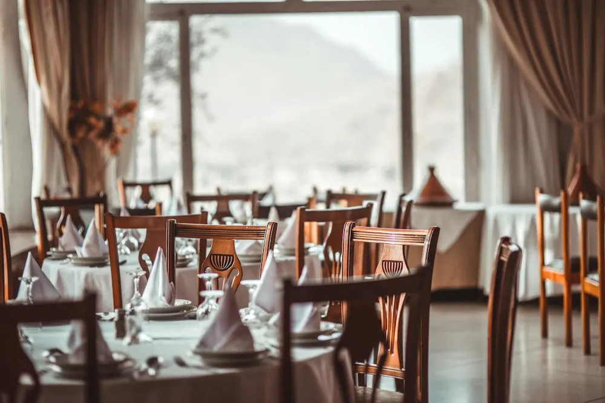

Contact & Accès
Retrouvez toutes nos coordonnées, nos horaires détaillés et venez nous rendre visite.
Nos Coordonnées
Téléphone :
Adresse e-mail :
Accès transports :
Accès direct par la Voie Express du Lac • Parking privé sécurisé avec service voiturier.

Horaires d'Ouverture
Notre équipe vous accueille pour le service du midi et du soir aux horaires suivants :
| Jour | Service Déjeuner | Service Dîner |
|---|---|---|
| Lundi | Fermé (Jour de repos) | |
| Mardi | 12h00 - 14h30 | 19h00 - 22h30 |
| Mercredi | 12h00 - 14h30 | 19h00 - 22h30 |
| Jeudi | 12h00 - 14h30 | 19h00 - 22h30 |
| Vendredi | 12h00 - 14h30 | 19h00 - 23h00 |
| Samedi | 12h00 - 15h00 | 19h00 - 23h30 |
| Dimanche | 12h00 - 15h00 | 19h00 - 22h30 |
Vous prévoyez une visite ?
Nous vous conseillons de réserver votre table à l'avance pour vous garantir la meilleure place.
Faire une réservation